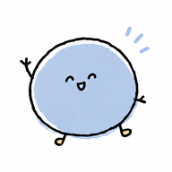

모두의 aiTable 03
모두의 테이블
우리 가게에,
궁금한 게 있으세요?
메뉴 · 추천 · 가게 이야기
QR을 찍고 편한 언어로 만나보세요.
프로젝트 체험용 · 실제 주문 불가
비공개 게시 상태에서는 소유자 로그인이 필요합니다.

모두의 ai메뉴 · 추천 · 가게 이야기
QR을 찍고 편한 언어로 만나보세요.
프로젝트 체험용 · 실제 주문 불가
비공개 게시 상태에서는 소유자 로그인이 필요합니다.